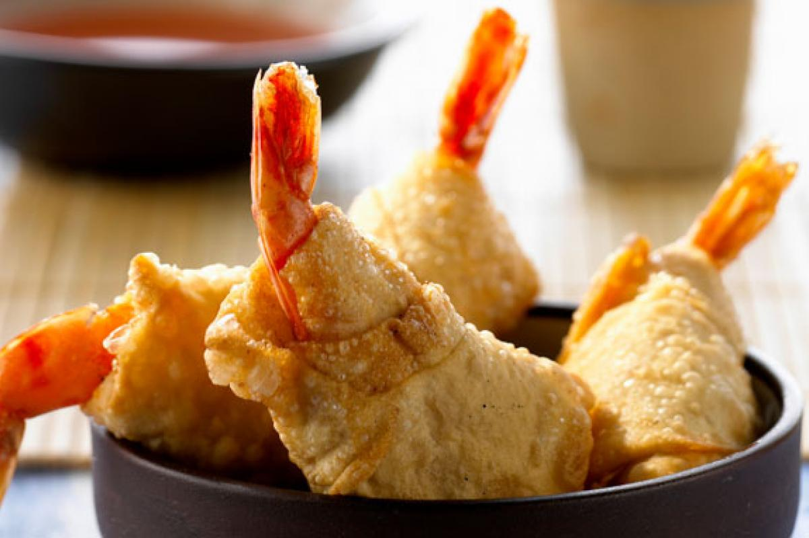

Orange Ginger Thai Shrimp

As described (loosely) to me by a brother of a close friend.
I still remember the delicious smell in that stuffy kitchen,
southwest Missouri in a house filled with books and cats,
my friend's brother nonchalantly told me how to make this.
In the next year or two, in the Rockies,
I made this with my syblings and grandma for a reunion.
Ingredients
- Orange Ginger Thai sauce
- Olive oil
- Sesame oil
- Basil leaves (whole? dried? you pick)
- Wonton wraps
- Small or jumbo shrimp (if jumbo, make sure you get big enough wraps)
Steps
- Wrap shrimp in wonton wraps
- Moisten edges to seal wontons around shrimp
- Fry shrimp until golden brown in olive oil
- Heat basil leaves in sesame oil separately
- Pour sesame-basil mix over fried shrimp as desired
- Do the same with the Orange Ginger Thai sauce
- Notes:
- This food takes a surprisngly long time to make, and you get your hands dirty, but it feels wonderful, and kind of fancy
- Make sure you buy a lot of shrimp if more than 1 person will be eating it; it goes quick
- You should cook this with others, it's fun - and you can be flexible about the sauce you choose
- Enjoy!